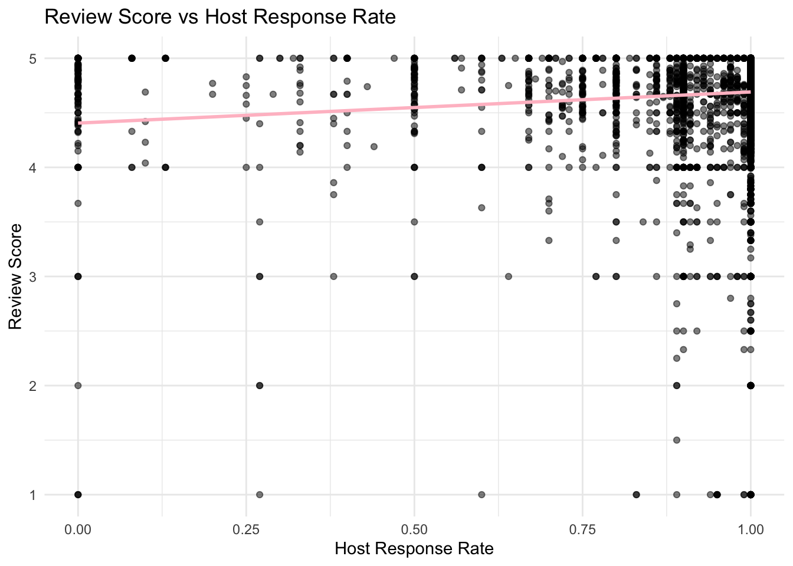
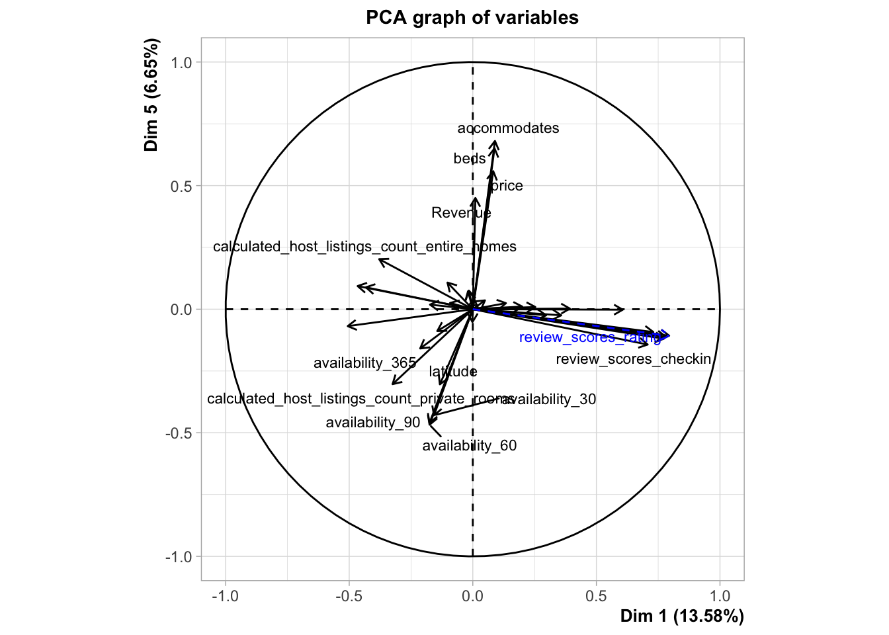

Airbnb Data Analysis Project Overview:
Tinu Sorinmade
NOTE: This file contains scrollable chunks
As part of a university coursework project, I assumed the role of a consultant to analyze the Toronto Airbnb market. My objective was to provide data-driven insights to enhance host performance and profitability. By examining an extensive data set, I aimed to uncover trends, patterns, and opportunities within the Toronto Airbnb landscape.
** The data used in this analysis was sourced from a 2023 data set available on InsideAirbnb.com (https://insideairbnb.com)
The goal of this project was to equip Airbnb hosts with actionable strategies to improve their reviews and achieve sustained success in Toronto’s competitive market.
Project Objectives (Established by my University Course Leader)
Regional Service Analysis: Provide a comprehensive overview of the service performance within Toronto, highlighting key trends and areas for improvement.
Predictive Revenue Model: Develop a predictive model to estimate the likelihood of properties achieving annual revenue at or above the median for the data set. (The model was based on the assumption that properties maintain an 80% booking rate throughout the year.)
Host Review Recommendations: Offer actionable recommendations to help property hosts improve their reviews, enhancing their competitiveness and guest satisfaction.
Provide Clear Comments to Explain the Code: Write clear and concise comments to improve the readability of the code and describe the trends within the data.
______________________________________________________________________________________________________
Data Pre-processing:
Variable Removal:
The first step before starting the main data analysis was the data pre-processing stage. This step involved filtering out variables that were not necessary for the analysis. The variables that I removed fell into one of the following categories:
- Personal Data: Personal identifiers (such as the host’s ID, scrape ID etc.) were removed to ensure privacy and to maintain compliance with data protection regulations.
- Irrelevant Information: Variables that did not contribute to the objectives of the analysis (e.g. host url, host About etc) were discarded to streamline the data set and focus on relevant data.
- Incomplete/Duplicated Data: Records with missing values or duplicates were excluded to ensure the data set’s integrity and quality.
The original data set contained over 20,000 records, which were reduced to 9,268 after this filtering process. This reduction was essential for creating a clean and manageable data set, leading to more reliable and efficient analysis.
______________________________________________________________________________________________________
Data Transformation:
Certain variables were transformed to facilitate easier analysis and to ensure consistency across the data set. The specific transformations were as follows:
Binary Variables: ‘Host is Superhost’, ‘Host has Profile Pic’, ‘Host Identity Verified’, ‘Instant Bookable’: These were originally stored as Boolean (True/False) values and were converted to binary (0/1) format.
Text Data: ‘Host Verification’: This variable, initially in text format, contained multiple categories of verification. Each category was split into a separate binary variable (0/1) to better represent the presence or absence of specific verification.
Date Variables: ‘First Review’, ‘Last Review’, ‘Host Since’ : These were converted to a uniform date format to ensure consistency and facilitate time-based analysis, such as calculating the duration of host activity or determining trends over time.
______________________________________________________________________________________________________
New Variable Construction:
New variables were derived from existing data to enrich the analysis and to introduce features that better capture the underlying patterns in the data set. The following constructions were made:
‘Revenue’: This variable was calculated based on the assumption that each property books a certain percentage of its yearly availability (80% according to the project brief). This estimation provides a standardized measure of revenue, allowing for comparisons across different properties.
‘Unique Host ID’: A unique identifier was generated for each listing using a randomization function to ensure no duplicates existed. This variable is crucial for tracking individual listings without revealing personal information, maintaining the data set’s privacy and integrity.
‘Revenue Above Median’: This binary variable was created by comparing each property’s revenue to the median revenue of the data set. Properties with revenue above the median were coded as 1, and those below or equal to the median were coded as 0. This allows for easy categorization of properties based on their financial performance.
______________________________________________________________________________________________________
Data Cleaning- Outlier Removal:
After generating the ‘Revenue’ column, it was observed that some entries had extreme values, which could potentially skew the analysis. These outliers were removed because:
- Impact on Analysis: Extreme values can disproportionately affect statistical measures like mean and variance, leading to inaccurate models and predictions.
- Improved Accuracy: By removing outliers, the data set becomes more representative of typical properties, resulting in more reliable insights.
______________________________________________________________________________________________________
Data Exploration:
After completing the data pre-processing stages, I conducted data exploration to uncover general trends and patterns within the 9,268 Airbnb properties remaining in the data set. This step was essential for gaining insights into the characteristics and behaviors of these properties, laying the foundation for more in-depth analysis.
Install relevant packages for project
# Define a function to check and install missing packages
install_and_load <- function(pkg) {
if (!require(pkg, character.only = TRUE)) {
install.packages(pkg, dependencies = TRUE)
library(pkg, character.only = TRUE)
}
}
# List of required packages
packages <- c("FactoMineR", "ggplot2", "gridExtra", "factoextra", "dplyr",
"caret", "pscl", "readr", "readxl", "ggrepel", "tinytex", "knitr","party","randomForest","dplyr", "tidyverse",'plotly','ggplot2','kableExtra','foreign','RPostgreSQL','robustHD','readxl')
# Install and load all required packages
invisible(lapply(packages, install_and_load))Load the data
library(readxl)
airbnb <- read_excel("/Users/tinusorinmade/Documents/Airbnb Dataset/Airbnb-Canada.xlsx")General overview of the data set
Firstly, I created a general overview of the data set with summary statistics for numerical variables and frequency counts for categorical variables:
# Get summary statistics for numerical variables (like prices or ratings)
numerical_summary <- airbnb %>%
# Select only columns containing numerical data
select(where(is.numeric)) %>%
# Create summary statistics (mean, median, quartiles, etc.)
summary()
# Print the summary statistics for numerical variables
print(numerical_summary)## Unique_host_id host_id host_response_rate host_acceptance_rate
## Min. : 8980 Min. : 28515 Min. :0.0000 Min. :0.0000
## 1st Qu.:25514016 1st Qu.: 35499709 1st Qu.:1.0000 1st Qu.:0.8500
## Median :50275567 Median :143263720 Median :1.0000 Median :0.9700
## Mean :50161948 Mean :207424922 Mean :0.9644 Mean :0.8815
## 3rd Qu.:74901477 3rd Qu.:396135020 3rd Qu.:1.0000 3rd Qu.:1.0000
## Max. :99997452 Max. :551724881 Max. :1.0000 Max. :1.0000
## host_is_superhost host_listings_count host_total_listings_count
## Min. :0.000 Min. : 1.000 Min. : 1.00
## 1st Qu.:0.000 1st Qu.: 1.000 1st Qu.: 1.00
## Median :1.000 Median : 2.000 Median : 3.00
## Mean :0.542 Mean : 6.544 Mean : 10.06
## 3rd Qu.:1.000 3rd Qu.: 5.000 3rd Qu.: 8.00
## Max. :1.000 Max. :461.000 Max. :560.00
## host_verifications (email) host_verifications (phone)
## Min. :0.0000 Min. :0.0000
## 1st Qu.:1.0000 1st Qu.:1.0000
## Median :1.0000 Median :1.0000
## Mean :0.9131 Mean :0.9985
## 3rd Qu.:1.0000 3rd Qu.:1.0000
## Max. :1.0000 Max. :1.0000
## host_verifications (work email) host_has_profile_pic host_identity_verified
## Min. :0.0000 Min. :0.0000 Min. :0.0000
## 1st Qu.:0.0000 1st Qu.:1.0000 1st Qu.:1.0000
## Median :0.0000 Median :1.0000 Median :1.0000
## Mean :0.1088 Mean :0.9743 Mean :0.9636
## 3rd Qu.:0.0000 3rd Qu.:1.0000 3rd Qu.:1.0000
## Max. :1.0000 Max. :1.0000 Max. :1.0000
## latitude longitude accommodates beds
## Min. :43.59 Min. :-79.62 Min. : 1.000 Min. : 1.000
## 1st Qu.:43.65 1st Qu.:-79.43 1st Qu.: 2.000 1st Qu.: 1.000
## Median :43.67 Median :-79.40 Median : 2.000 Median : 1.000
## Mean :43.69 Mean :-79.40 Mean : 3.171 Mean : 1.764
## 3rd Qu.:43.72 3rd Qu.:-79.37 3rd Qu.: 4.000 3rd Qu.: 2.000
## Max. :43.84 Max. :-79.13 Max. :16.000 Max. :11.000
## price Revenue minimum_nights maximum_nights
## Min. : 8.0 Min. : 13.6 Min. : 1.00 Min. : 1.0
## 1st Qu.: 72.0 1st Qu.: 6720.0 1st Qu.: 2.00 1st Qu.: 90.0
## Median : 115.0 Median : 14600.0 Median : 28.00 Median : 365.0
## Mean : 160.2 Mean : 23908.4 Mean : 18.99 Mean : 467.8
## 3rd Qu.: 185.2 3rd Qu.: 28800.0 3rd Qu.: 28.00 3rd Qu.:1125.0
## Max. :10000.0 Max. :1448000.0 Max. :1120.00 Max. :3000.0
## availability_30 availability_60 availability_90 availability_365
## Min. : 0.00 Min. : 0.00 Min. : 0.00 Min. : 1.0
## 1st Qu.: 3.00 1st Qu.:16.00 1st Qu.:33.00 1st Qu.: 84.0
## Median :18.00 Median :41.00 Median :66.00 Median :175.0
## Mean :16.21 Mean :36.14 Mean :57.24 Mean :187.3
## 3rd Qu.:29.00 3rd Qu.:59.00 3rd Qu.:88.00 3rd Qu.:293.0
## Max. :30.00 Max. :60.00 Max. :90.00 Max. :365.0
## number_of_reviews number_of_reviews_ltm number_of_reviews_l30d
## Min. : 1.00 Min. : 0.00 Min. : 0.0000
## 1st Qu.: 4.00 1st Qu.: 1.00 1st Qu.: 0.0000
## Median : 14.00 Median : 4.00 Median : 0.0000
## Mean : 36.29 Mean : 11.57 Mean : 0.7477
## 3rd Qu.: 41.00 3rd Qu.: 16.00 3rd Qu.: 1.0000
## Max. :1018.00 Max. :158.00 Max. :15.0000
## review_scores_rating review_scores_accuracy review_scores_cleanliness
## Min. :1.000 Min. :1.000 Min. :1.000
## 1st Qu.:4.740 1st Qu.:4.780 1st Qu.:4.670
## Median :4.900 Median :4.920 Median :4.880
## Mean :4.785 Mean :4.806 Mean :4.747
## 3rd Qu.:5.000 3rd Qu.:5.000 3rd Qu.:5.000
## Max. :5.000 Max. :5.000 Max. :5.000
## review_scores_checkin review_scores_communication review_scores_location
## Min. :1.000 Min. :1.000 Min. :1.000
## 1st Qu.:4.840 1st Qu.:4.880 1st Qu.:4.780
## Median :4.960 Median :4.980 Median :4.920
## Mean :4.854 Mean :4.867 Mean :4.828
## 3rd Qu.:5.000 3rd Qu.:5.000 3rd Qu.:5.000
## Max. :5.000 Max. :5.000 Max. :5.000
## review_scores_value instant_bookable calculated_host_listings_count
## Min. :1.000 Min. :0.0000 Min. : 1.000
## 1st Qu.:4.600 1st Qu.:0.0000 1st Qu.: 1.000
## Median :4.790 Median :0.0000 Median : 2.000
## Mean :4.681 Mean :0.1933 Mean : 4.391
## 3rd Qu.:4.930 3rd Qu.:0.0000 3rd Qu.: 4.000
## Max. :5.000 Max. :1.0000 Max. :49.000
## calculated_host_listings_count_entire_homes
## Min. : 0.000
## 1st Qu.: 0.000
## Median : 1.000
## Mean : 2.333
## 3rd Qu.: 2.000
## Max. :40.000
## calculated_host_listings_count_private_rooms
## Min. : 0.000
## 1st Qu.: 0.000
## Median : 0.000
## Mean : 2.021
## 3rd Qu.: 2.000
## Max. :46.000
## calculated_host_listings_count_shared_rooms reviews_per_month
## Min. :0.00000 Min. : 0.01
## 1st Qu.:0.00000 1st Qu.: 0.33
## Median :0.00000 Median : 0.96
## Mean :0.03741 Mean : 1.58
## 3rd Qu.:0.00000 3rd Qu.: 2.28
## Max. :8.00000 Max. :12.50# Get frequency counts for categorical variables (like property types or locations)
categorical_summary <- airbnb %>%
# Select only columns containing character data (text)
select(where(is.character)) %>%
# Summarize each column, creating a list with frequency tables
summarise(across(everything(), ~ list(as.data.frame(table(.)))))
# Print frequency counts for each categorical variable
for (col in names(categorical_summary)) {
# Print the category name
cat("\n", col, ":\n")
# Print the frequency table for that category
print(categorical_summary[[col]][[1]])
}##
## host_response_time :
## host_response_time Freq
## 1 a few days or more 178
## 2 within a day 742
## 3 within a few hours 1720
## 4 within an hour 6608
##
## host_verifications :
## host_verifications Freq
## 1 ['email', 'phone', 'work_email'] 973
## 2 ['email', 'phone'] 7457
## 3 ['email'] 14
## 4 ['phone', 'work_email'] 33
## 5 ['phone'] 771
##
## neighbourhood_cleansed :
## neighbourhood_cleansed Freq
## 1 Agincourt North 23
## 2 Agincourt South-Malvern West 40
## 3 Alderwood 36
## 4 Annex 288
## 5 Banbury-Don Mills 37
## 6 Bathurst Manor 32
## 7 Bay Street Corridor 221
## 8 Bayview Village 45
## 9 Bayview Woods-Steeles 33
## 10 Bedford Park-Nortown 37
## 11 Beechborough-Greenbrook 13
## 12 Bendale 37
## 13 Birchcliffe-Cliffside 60
## 14 Black Creek 23
## 15 Blake-Jones 26
## 16 Briar Hill-Belgravia 41
## 17 Bridle Path-Sunnybrook-York Mills 7
## 18 Broadview North 20
## 19 Brookhaven-Amesbury 17
## 20 Cabbagetown-South St.James Town 72
## 21 Caledonia-Fairbank 20
## 22 Casa Loma 22
## 23 Centennial Scarborough 26
## 24 Church-Yonge Corridor 219
## 25 Clairlea-Birchmount 39
## 26 Clanton Park 54
## 27 Cliffcrest 39
## 28 Corso Italia-Davenport 61
## 29 Danforth 28
## 30 Danforth East York 49
## 31 Don Valley Village 57
## 32 Dorset Park 31
## 33 Dovercourt-Wallace Emerson-Junction 210
## 34 Downsview-Roding-CFB 82
## 35 Dufferin Grove 75
## 36 East End-Danforth 65
## 37 Edenbridge-Humber Valley 27
## 38 Eglinton East 29
## 39 Elms-Old Rexdale 5
## 40 Englemount-Lawrence 25
## 41 Eringate-Centennial-West Deane 34
## 42 Etobicoke West Mall 33
## 43 Flemingdon Park 19
## 44 Forest Hill North 4
## 45 Forest Hill South 14
## 46 Glenfield-Jane Heights 35
## 47 Greenwood-Coxwell 69
## 48 Guildwood 23
## 49 Henry Farm 17
## 50 High Park North 52
## 51 High Park-Swansea 95
## 52 Highland Creek 19
## 53 Hillcrest Village 36
## 54 Humber Heights-Westmount 11
## 55 Humber Summit 7
## 56 Humbermede 17
## 57 Humewood-Cedarvale 31
## 58 Ionview 28
## 59 Islington-City Centre West 110
## 60 Junction Area 72
## 61 Keelesdale-Eglinton West 37
## 62 Kennedy Park 18
## 63 Kensington-Chinatown 189
## 64 Kingsview Village-The Westway 28
## 65 Kingsway South 7
## 66 L'Amoreaux 53
## 67 Lambton Baby Point 12
## 68 Lansing-Westgate 50
## 69 Lawrence Park North 29
## 70 Lawrence Park South 29
## 71 Leaside-Bennington 31
## 72 Little Portugal 172
## 73 Long Branch 39
## 74 Malvern 50
## 75 Maple Leaf 12
## 76 Markland Wood 17
## 77 Milliken 32
## 78 Mimico (includes Humber Bay Shores) 108
## 79 Morningside 13
## 80 Moss Park 182
## 81 Mount Dennis 23
## 82 Mount Olive-Silverstone-Jamestown 7
## 83 Mount Pleasant East 43
## 84 Mount Pleasant West 89
## 85 New Toronto 36
## 86 Newtonbrook East 105
## 87 Newtonbrook West 107
## 88 Niagara 329
## 89 North Riverdale 61
## 90 North St.James Town 61
## 91 O'Connor-Parkview 46
## 92 Oakridge 34
## 93 Oakwood Village 78
## 94 Old East York 27
## 95 Palmerston-Little Italy 176
## 96 Parkwoods-Donalda 43
## 97 Pelmo Park-Humberlea 24
## 98 Playter Estates-Danforth 34
## 99 Pleasant View 57
## 100 Princess-Rosethorn 24
## 101 Regent Park 48
## 102 Rexdale-Kipling 14
## 103 Rockcliffe-Smythe 60
## 104 Roncesvalles 72
## 105 Rosedale-Moore Park 26
## 106 Rouge 45
## 107 Runnymede-Bloor West Village 27
## 108 Rustic 8
## 109 Scarborough Village 13
## 110 South Parkdale 104
## 111 South Riverdale 164
## 112 St.Andrew-Windfields 29
## 113 Steeles 44
## 114 Stonegate-Queensway 71
## 115 Tam O'Shanter-Sullivan 49
## 116 Taylor-Massey 23
## 117 The Beaches 109
## 118 Thistletown-Beaumond Heights 25
## 119 Thorncliffe Park 10
## 120 Trinity-Bellwoods 247
## 121 University 76
## 122 Victoria Village 27
## 123 Waterfront Communities-The Island 1449
## 124 West Hill 54
## 125 West Humber-Clairville 65
## 126 Westminster-Branson 28
## 127 Weston 21
## 128 Weston-Pellam Park 48
## 129 Wexford/Maryvale 70
## 130 Willowdale East 177
## 131 Willowdale West 89
## 132 Willowridge-Martingrove-Richview 50
## 133 Woburn 36
## 134 Woodbine Corridor 48
## 135 Woodbine-Lumsden 36
## 136 Wychwood 54
## 137 Yonge-Eglinton 46
## 138 Yonge-St.Clair 20
## 139 York University Heights 103
## 140 Yorkdale-Glen Park 54
##
## property_type :
## property_type Freq
## 1 Casa particular 1
## 2 Entire bungalow 103
## 3 Entire condo 1693
## 4 Entire cottage 2
## 5 Entire guest suite 445
## 6 Entire guesthouse 59
## 7 Entire home 1466
## 8 Entire loft 90
## 9 Entire place 7
## 10 Entire rental unit 1940
## 11 Entire serviced apartment 23
## 12 Entire townhouse 109
## 13 Entire vacation home 6
## 14 Entire villa 11
## 15 Private room 8
## 16 Private room in barn 5
## 17 Private room in bed and breakfast 20
## 18 Private room in bungalow 218
## 19 Private room in casa particular 5
## 20 Private room in condo 213
## 21 Private room in guest suite 115
## 22 Private room in guesthouse 13
## 23 Private room in home 1993
## 24 Private room in hostel 2
## 25 Private room in hut 1
## 26 Private room in loft 5
## 27 Private room in minsu 1
## 28 Private room in rental unit 382
## 29 Private room in serviced apartment 7
## 30 Private room in tiny home 2
## 31 Private room in townhouse 175
## 32 Private room in treehouse 1
## 33 Private room in vacation home 5
## 34 Private room in villa 31
## 35 Room in aparthotel 2
## 36 Room in boutique hotel 20
## 37 Room in hotel 8
## 38 Shared room in bungalow 3
## 39 Shared room in condo 10
## 40 Shared room in guest suite 2
## 41 Shared room in home 11
## 42 Shared room in hostel 10
## 43 Shared room in rental unit 16
## 44 Shared room in townhouse 4
## 45 Shipping container 1
## 46 Tiny home 4
##
## room_type :
## room_type Freq
## 1 Entire home/apt 5961
## 2 Private room 3231
## 3 Shared room 56
##
## bathrooms_text :
## bathrooms_text Freq
## 1 0 baths 5
## 2 0 shared baths 9
## 3 1 bath 4513
## 4 1 private bath 1026
## 5 1 shared bath 1291
## 6 1.5 baths 391
## 7 1.5 shared baths 203
## 8 2 baths 1115
## 9 2 shared baths 180
## 10 2.5 baths 198
## 11 2.5 shared baths 12
## 12 3 baths 106
## 13 3 shared baths 14
## 14 3.5 baths 105
## 15 3.5 shared baths 2
## 16 4 baths 23
## 17 4 shared baths 1
## 18 4.5 baths 20
## 19 4.5 shared baths 3
## 20 5 baths 6
## 21 5.5 baths 8
## 22 6 baths 2
## 23 6.5 baths 1
## 24 Half-bath 7
## 25 Private half-bath 1
## 26 Shared half-bath 6Using these summaries, I developed a range of exploratory graphs to delve into the relationships and key trends across the variables. Below are the most significant visualizations and the insights they reveal.
Histograms for Numerical values:
To visualize the distribution of key numerical variables using histograms:
# Histograms for numerical variables
print(colnames(airbnb)) # Print the names of the columns in the dataset## [1] "Unique_host_id"
## [2] "host_id"
## [3] "host_since"
## [4] "host_response_time"
## [5] "host_response_rate"
## [6] "host_acceptance_rate"
## [7] "host_is_superhost"
## [8] "host_listings_count"
## [9] "host_total_listings_count"
## [10] "host_verifications"
## [11] "host_verifications (email)"
## [12] "host_verifications (phone)"
## [13] "host_verifications (work email)"
## [14] "host_has_profile_pic"
## [15] "host_identity_verified"
## [16] "neighbourhood_cleansed"
## [17] "latitude"
## [18] "longitude"
## [19] "property_type"
## [20] "room_type"
## [21] "accommodates"
## [22] "bathrooms_text"
## [23] "beds"
## [24] "price"
## [25] "Revenue"
## [26] "minimum_nights"
## [27] "maximum_nights"
## [28] "availability_30"
## [29] "availability_60"
## [30] "availability_90"
## [31] "availability_365"
## [32] "number_of_reviews"
## [33] "number_of_reviews_ltm"
## [34] "number_of_reviews_l30d"
## [35] "first_review"
## [36] "last_review"
## [37] "review_scores_rating"
## [38] "review_scores_accuracy"
## [39] "review_scores_cleanliness"
## [40] "review_scores_checkin"
## [41] "review_scores_communication"
## [42] "review_scores_location"
## [43] "review_scores_value"
## [44] "instant_bookable"
## [45] "calculated_host_listings_count"
## [46] "calculated_host_listings_count_entire_homes"
## [47] "calculated_host_listings_count_private_rooms"
## [48] "calculated_host_listings_count_shared_rooms"
## [49] "reviews_per_month"# Generate histograms for numerical variables
airbnb %>%
select(price, Revenue, accommodates, number_of_reviews, reviews_per_month) %>% # Select the columns of interest
pivot_longer(cols = everything(), names_to = 'variable', values_to = 'value') %>% # Convert the data to long format
ggplot(aes(x = value)) + # Map the value column to the x-axis
geom_histogram(binwidth = 10, fill = 'pink', color = 'red') + # Create a histogram with specified bin width, fill, and color
facet_wrap(~ variable, scales = 'free') + # Create multiple plots for each variable
theme_minimal() + # Apply a minimal theme to the plot
labs(title = 'Distribution of Numerical Variables') # Add a title to the plotBar Graphs for Categorical Variables:
To visualize the frequency of categories for variables
like property_type, room_type,
and neighbourhood_cleansed:
# Select the categorical variables of interest
airbnb %>%
select(property_type, room_type, neighbourhood_cleansed) %>%
pivot_longer(cols = everything(), names_to = "variable", values_to = "value") %>%
ggplot(aes(x = value)) +
geom_bar(fill = "pink", color = "red") +
facet_wrap(~ variable, scales = "free_x") +
theme_minimal() +
labs(title = "Frequency of Categorical Variables")Neighborhood: The neighborhood with the most listings was Waterfront Communities-The Island, while the neighborhood with the fewest listings was Forest Hill North.
Property Type: There were 46 unique property types, with ‘private room in homes’ being the most popular, followed by ’entire rental unit.
Room Type: There are three different room types on offer. The most listed room type is entire home/ apartment – suggesting this might be most popular.
Price Distribution Across All Property Types:
To compare the distribution of numerical variables across different categories:
# Create box plots for price by property type
airbnb %>%
ggplot(aes(x = property_type, y = price)) +
geom_boxplot(fill = "pink", color = "red") +
theme_minimal() +
labs(title = "Price Distribution by Property Type",
x = "Property Type",
y = "Price") +
theme(axis.text.x = element_text(angle = 45, hjust = 1))The most expensive property type was an ’entire villa’ at almost $1000, followed by the ‘shipping container’.
The prices ranged from $1000 to $35, with the lowest being for a shared room in a home
Number of Reviews By Property Type:
To explore relationships between numerical variables
like price and number_of_reviews:
# Create a scatter plot of price vs number of reviews
airbnb %>%
ggplot(aes(x = price, y = number_of_reviews)) +
geom_point(alpha = 0.5, color = "black") +
geom_smooth(method = "lm", se = FALSE, color = "pink") +
theme_minimal() +
labs(title = "Price vs Number of Reviews",
x = "Number of Reviews",
y = "Price")- This plot revealed that the lower the price the higher the number of reviews.
Correlation Matrix:
To examine correlations between numerical variables:
# Select only numerical columns from the Airbnb data
numerical_data <- airbnb %>%
select(where(is.numeric)) # Filter for numeric data
# Calculate correlations between all numerical variables
cor_matrix <- cor(numerical_data, use = "complete.obs") # Create correlation matrix
# Convert the correlation matrix into a data frame for easier plotting
cor_data <- as.data.frame(as.table(cor_matrix)) # Convert to data frame
# Create a heatmap to visualize correlations
ggplot(cor_data, aes(Var1, Var2, fill = Freq)) +
geom_tile(color = "white") +
scale_fill_gradient2(low = "pink", high = "red", mid = "white",
midpoint = 0, limit = c(-1,1), space = "Lab",
name="Correlation") +
theme_minimal() +
theme(axis.text.x = element_text(angle = 45, vjust = 1,
size = 12, hjust = 1)) +
labs(title = "Correlation Matrix Heatmap",
x = "Variables",
y = "Variables")Host Response and Acceptance Rates: There was a positive correlation between host response rate and host acceptance rate (0.39), indicating that hosts who responded quickly were also likely to accept booking requests at a higher rate.
Superhost Status: The correlation between being a super host and various factors like host response rate (0.20) and host acceptance rate (0.22) suggested that superhosts tended to have higher response and acceptance rates.
Listing Counts: The number of host listings and total listings were highly correlated (0.93), implying that hosts with more listings generally had a higher total number of listings.
Verification Factors: Verification factors such as having a verified phone number and email were relatively low in correlation with other metrics.
Geographic Data: Latitude and longitude had low correlations with most other metrics.
Availability and Pricing: Availability metrics (30, 60, 90 days) were positively correlated with each other, and availability of 365 days showed a moderate positive correlation with revenue (0.41), indicating that listings available throughout the year tended to generate higher revenue.
Reviews: The number of reviews had a positive correlation with revenue (0.43), suggesting that more reviews might have been associated with higher revenue.
Price and Revenue: There was a strong positive correlation between price and revenue (0.65), highlighting that higher prices generally led to higher revenue.
Listing and Review Counts: The number of reviews had a modest positive correlation with the number of beds (0.32) and the accommodation capacity (0.43), suggesting that listings with more beds or larger accommodations might have received more reviews.
Distribution of Review Score by Superhost Status:
# Ensure that the 'host_is_superhost' column is treated as categorical data
# This is important for plotting and analysis
airbnb$host_is_superhost <- factor(airbnb$host_is_superhost)
# Select the relevant columns for review scores and Superhost status
long_data <- airbnb %>%
select(review_scores_rating, review_scores_cleanliness, review_scores_checkin,
review_scores_communication, review_scores_location, review_scores_value,
review_scores_accuracy, host_is_superhost) %>%
pivot_longer(cols = starts_with("review_scores"), # Select columns starting with "review_scores"
names_to = "variable", # Create a new column for variable names
values_to = "value") # Create a new column for the review scores
# Create a histogram to visualize the distribution of review scores
# Then compare Superhosts and non-Superhosts using different colors
ggplot(long_data, aes(x = value, fill = host_is_superhost)) + # Set data and aesthetics
geom_histogram(binwidth = 1, alpha = 0.5, position = "identity") + # Create histogram with transparency
facet_wrap(~ variable, scales = "free") + # Create multiple plots for each review category
theme_minimal() + # Use a simple plot theme
labs(title = "Distribution of Review Scores by Superhost Status", # Set plot title
x = "Score", # Set x-axis label
y = "Count", # Set y-axis label
fill = "Superhost Status") # Set legend labelHosts with a super host status (1) scored consistently higher across all review score categories compared to those without the super host status (0).
This suggested that the super-host status, which Airbnb awarded based on factors like response rate, number of bookings, and ratings, might have correlated with guests having a better experience, as reflected in the review scores.
Response Rate by Review Count:
# Create a scatter plot of host_response_rate vs review_scores_value reviews
airbnb %>%
ggplot(aes(x = host_response_rate, y = review_scores_value)) + # Correct mapping of variables
geom_point(alpha = 0.5, color = "black") + # Add data points
geom_smooth(method = "lm", se = FALSE, color = "pink") + # Add a linear regression line
theme_minimal() + # Apply a minimal theme to the plot
labs(title = "Review Score vs Host Response Rate", # Corrected plot title
x = "Host Response Rate", # Corrected x-axis label
y = "Review Score") # Corrected y-axis label
There appeared to be a slight positive correlation between review scores and host response rate.
This suggested that hosts with higher average review scores tended to have slightly higher response rates.
Predictive Modelling:
Logistic Model: Property Profits:
Method Rationale: The project aimed to provide actionable recommendations for Airbnb hosts by predicting whether their Canadian properties would meet or exceed the median yearly revenue. Using the median as a benchmark simplified analysis with a clear performance threshold, allowing for straightforward classification into high-performing or below-median properties. This binary classification helped identify top performers and offer targeted advice.
Results: The model estimated that 53.1% of properties would achieve or surpass the median revenue, providing hosts with a clear standard to assess and improve performance.
1) Calculating the Yearly Revenue:
To determine if a property meets or exceeds the median annual revenue, I first estimated each property’s yearly revenue based on an 80% booking rate. This calculation produced the yearly_revenue variable, which is crucial for comparing each property’s revenue against the median threshold.
# Calculate yearly revenue assuming that hosts achieve 80% of their availability
yearly_revenue <- (0.8 * airbnb$availability_365) * airbnb$price # Calculate yearly revenue
airbnb_new <- cbind(airbnb, yearly_revenue) # Append the yearly revenue column to a new version of the airbnb data set2) Calculate Median Revenue:
I computed the median yearly revenue to establish a benchmark for performance. Properties were then classified as either achieving the median revenue (1) or not (0). This binary classification simplified the analysis and prepared the data set for logistic regression modeling.
# Calculate the median yearly revenue from the dataset
Median_Revenue <- median(airbnb_new$yearly_revenue, na.rm = TRUE) # Handle NA values
# Create a new variable indicating whether a property is above or below the median revenue
AboveMedianRevenue <- ifelse(airbnb_new$yearly_revenue >= Median_Revenue, 1, 0)
# Combine the original dataset with the newly created variable
airbnb_new2 <- cbind(airbnb_new, AboveMedianRevenue)3) Plotting Current Data set Probability (“AboveMedianRevenue”):
I used a pie chart to visualize the proportion of properties meeting or exceeding the median revenue. This visualization provided a clear view of revenue distribution and helped quickly understand the performance of properties relative to the benchmark.
library(plotly) # Ensure that plotly is loaded
above_median_counts <- table(airbnb_new2$AboveMedianRevenue)
# Create a data frame to hold the category (Above/Below Median) and counts
df_counts <- as.data.frame(above_median_counts)
# Rename the columns of the data frame for clarity
colnames(df_counts) <- c("Category", "Count") # Category = Above/Below, Count = number of properties
# Create an interactive pie chart
plot_ly(df_counts,
labels = ~Category,
values = ~Count,
type = 'pie',
textinfo = 'label+percent',
marker = list(colors = c("#FF5A5F", "#484848"))) %>%
layout(title = 'Distribution of Properties by Yearly Revenue',
showlegend = TRUE)4) Feature Selection:
Selecting relevant features ensured that the logistic regression model was both accurate and understandable. I focused on variables that were likely to influence whether a property achieved the median revenue, refining the data set for effective modeling. This step used insights from the correlation matrix created in the data exploration stage.
features <- airbnb_new2 %>%
select(AboveMedianRevenue, accommodates, room_type, neighbourhood_cleansed, minimum_nights,
host_verifications, review_scores_rating) # Create a subset of the dataset with variables relevant to revenue prediction
target <- airbnb_new2$AboveMedianRevenue # Define the outcome variable for a predictive model based on revenue5) Data Splitting:
I split the data set into training and test sets to build and evaluate the logistic regression model. The training set was used for model development, while the test set assessed the model’s performance on unseen data, ensuring reliable evaluation.
library(caret) # Ensure that caret is loaded
set.seed(42) # Seed ensures reproducibility by setting a seed
trainingSamples <- createDataPartition(target, p = 0.7, list = FALSE) # Generate random sample of data, with 70% allocated to training
train <- airbnb_new2[trainingSamples, ] # Extract the training data
test <- airbnb_new2[-trainingSamples, ] # Extract the testing data6) Constructing Logistic Regression Model:
Constructing the logistic regression model involved analyzing how various factors affected the probability of achieving at least the median revenue. This step helped identify significant predictors and provided insights that could guide property improvements.
model_formula <- as.formula("AboveMedianRevenue ~ accommodates + room_type + neighbourhood_cleansed + minimum_nights + host_verifications + review_scores_rating") # Specify model structure with target and explanatory variables
model <- glm(model_formula, data = train, family = "binomial") # Fit logistic regression model using defined formula and training data
modelsum <- summary(model) # Summarize the model, providing coefficients, significance, and fit quality
print(modelsum) # Print the model summary to view results##
## Call:
## glm(formula = model_formula, family = "binomial", data = train)
##
## Coefficients:
## Estimate Std. Error
## (Intercept) -1.680649 0.863032
## accommodates 0.307636 0.018907
## room_typePrivate room -0.867598 0.074258
## room_typeShared room -0.985544 0.361329
## neighbourhood_cleansedAgincourt South-Malvern West 2.570637 0.874757
## neighbourhood_cleansedAlderwood 1.807246 0.917867
## neighbourhood_cleansedAnnex 1.818211 0.802283
## neighbourhood_cleansedBanbury-Don Mills 1.180831 0.923671
## neighbourhood_cleansedBathurst Manor 1.381070 0.901733
## neighbourhood_cleansedBay Street Corridor 1.753536 0.807342
## neighbourhood_cleansedBayview Village 1.692817 0.877286
## neighbourhood_cleansedBayview Woods-Steeles 1.025709 0.943915
## neighbourhood_cleansedBedford Park-Nortown 2.418684 0.942927
## neighbourhood_cleansedBeechborough-Greenbrook 3.513035 1.356488
## neighbourhood_cleansedBendale 1.526215 0.901011
## neighbourhood_cleansedBirchcliffe-Cliffside 0.923319 0.859513
## neighbourhood_cleansedBlack Creek 2.266485 0.994595
## neighbourhood_cleansedBlake-Jones 1.381655 0.942819
## neighbourhood_cleansedBriar Hill-Belgravia 1.541886 0.891803
## neighbourhood_cleansedBridle Path-Sunnybrook-York Mills 0.517081 1.269000
## neighbourhood_cleansedBroadview North 0.650303 1.005091
## neighbourhood_cleansedBrookhaven-Amesbury 0.578603 1.010626
## neighbourhood_cleansedCabbagetown-South St.James Town 2.033430 0.841178
## neighbourhood_cleansedCaledonia-Fairbank 1.792994 0.964167
## neighbourhood_cleansedCasa Loma 1.282099 0.975079
## neighbourhood_cleansedCentennial Scarborough 3.012525 0.941870
## neighbourhood_cleansedChurch-Yonge Corridor 1.779482 0.806229
## neighbourhood_cleansedClairlea-Birchmount 1.356786 0.884048
## neighbourhood_cleansedClanton Park 1.523525 0.881632
## neighbourhood_cleansedCliffcrest 2.082459 0.888567
## neighbourhood_cleansedCorso Italia-Davenport 1.332162 0.862497
## neighbourhood_cleansedDanforth 1.787056 0.910172
## neighbourhood_cleansedDanforth East York 1.560852 0.861245
## neighbourhood_cleansedDon Valley Village 1.885520 0.847594
## neighbourhood_cleansedDorset Park 1.966338 0.923092
## neighbourhood_cleansedDovercourt-Wallace Emerson-Junction 1.009425 0.808593
## neighbourhood_cleansedDownsview-Roding-CFB 2.337120 0.840862
## neighbourhood_cleansedDufferin Grove 0.758575 0.842945
## neighbourhood_cleansedEast End-Danforth 2.024071 0.850184
## neighbourhood_cleansedEdenbridge-Humber Valley 0.887065 0.951122
## neighbourhood_cleansedEglinton East 1.337497 0.969581
## neighbourhood_cleansedElms-Old Rexdale -10.587807 177.212201
## neighbourhood_cleansedEnglemount-Lawrence 1.869375 0.923949
## neighbourhood_cleansedEringate-Centennial-West Deane 2.255687 0.925079
## neighbourhood_cleansedEtobicoke West Mall 1.484306 0.911711
## neighbourhood_cleansedFlemingdon Park 1.697831 0.982972
## neighbourhood_cleansedForest Hill North -9.803988 324.744654
## neighbourhood_cleansedForest Hill South 2.734213 1.168897
## neighbourhood_cleansedGlenfield-Jane Heights 0.845865 0.936078
## neighbourhood_cleansedGreenwood-Coxwell 1.585656 0.837558
## neighbourhood_cleansedGuildwood 1.535294 0.956860
## neighbourhood_cleansedHenry Farm 1.906264 0.978102
## neighbourhood_cleansedHigh Park North 2.063342 0.872538
## neighbourhood_cleansedHigh Park-Swansea 1.640142 0.834579
## neighbourhood_cleansedHighland Creek 2.387304 0.985765
## neighbourhood_cleansedHillcrest Village 0.605983 0.947309
## neighbourhood_cleansedHumber Heights-Westmount 1.766678 1.054765
## neighbourhood_cleansedHumber Summit 1.831503 1.340936
## neighbourhood_cleansedHumbermede 0.249337 1.180158
## neighbourhood_cleansedHumewood-Cedarvale 1.511235 0.938776
## neighbourhood_cleansedIonview 1.982177 0.932157
## neighbourhood_cleansedIslington-City Centre West 1.321517 0.829728
## neighbourhood_cleansedJunction Area 1.164857 0.847741
## neighbourhood_cleansedKeelesdale-Eglinton West 2.184677 0.920414
## neighbourhood_cleansedKennedy Park 1.880774 1.063075
## neighbourhood_cleansedKensington-Chinatown 1.648989 0.811630
## neighbourhood_cleansedKingsview Village-The Westway 1.828024 0.947659
## neighbourhood_cleansedKingsway South -0.433815 1.424030
## neighbourhood_cleansedL'Amoreaux 0.780497 0.899198
## neighbourhood_cleansedLambton Baby Point 1.334577 1.028205
## neighbourhood_cleansedLansing-Westgate 2.376477 0.862688
## neighbourhood_cleansedLawrence Park North 1.898666 0.937690
## neighbourhood_cleansedLawrence Park South 2.631816 0.952966
## neighbourhood_cleansedLeaside-Bennington 1.229075 0.909198
## neighbourhood_cleansedLittle Portugal 1.883757 0.812222
## neighbourhood_cleansedLong Branch 1.389238 0.896214
## neighbourhood_cleansedMalvern 0.566256 0.921146
## neighbourhood_cleansedMaple Leaf 2.828198 1.352451
## neighbourhood_cleansedMarkland Wood 2.014618 1.039865
## neighbourhood_cleansedMilliken 1.664138 0.902172
## neighbourhood_cleansedMimico (includes Humber Bay Shores) 1.686920 0.826324
## neighbourhood_cleansedMorningside 2.186474 1.061522
## neighbourhood_cleansedMoss Park 1.742877 0.810871
## neighbourhood_cleansedMount Dennis 1.706990 0.937464
## neighbourhood_cleansedMount Olive-Silverstone-Jamestown 1.608205 1.271085
## neighbourhood_cleansedMount Pleasant East 2.410709 0.873267
## neighbourhood_cleansedMount Pleasant West 2.289358 0.839585
## neighbourhood_cleansedNew Toronto 2.779607 0.914227
## neighbourhood_cleansedNewtonbrook East 1.065611 0.836971
## neighbourhood_cleansedNewtonbrook West 2.041573 0.826025
## neighbourhood_cleansedNiagara 1.649812 0.800346
## neighbourhood_cleansedNorth Riverdale 1.282812 0.860212
## neighbourhood_cleansedNorth St.James Town 1.985546 0.853132
## neighbourhood_cleansedO'Connor-Parkview 1.820852 0.896488
## neighbourhood_cleansedOakridge 1.623436 0.914846
## neighbourhood_cleansedOakwood Village 2.040062 0.846804
## neighbourhood_cleansedOld East York 0.387905 0.964211
## neighbourhood_cleansedPalmerston-Little Italy 1.335405 0.812536
## neighbourhood_cleansedParkwoods-Donalda 1.104758 0.909277
## neighbourhood_cleansedPelmo Park-Humberlea 1.416930 0.971765
## neighbourhood_cleansedPlayter Estates-Danforth 0.569842 0.943713
## neighbourhood_cleansedPleasant View 0.413312 0.905721
## neighbourhood_cleansedPrincess-Rosethorn 1.383586 0.949436
## neighbourhood_cleansedRegent Park 1.284249 0.878607
## neighbourhood_cleansedRexdale-Kipling 1.220833 1.102869
## neighbourhood_cleansedRockcliffe-Smythe 1.025441 0.862840
## neighbourhood_cleansedRoncesvalles 1.847357 0.846974
## neighbourhood_cleansedRosedale-Moore Park 2.212732 0.942502
## neighbourhood_cleansedRouge 1.144356 0.904804
## neighbourhood_cleansedRunnymede-Bloor West Village 2.353691 0.924632
## neighbourhood_cleansedRustic 1.958543 1.521894
## neighbourhood_cleansedScarborough Village 0.735612 1.102295
## neighbourhood_cleansedSouth Parkdale 2.074723 0.827315
## neighbourhood_cleansedSouth Riverdale 1.883250 0.814400
## neighbourhood_cleansedSt.Andrew-Windfields 1.846326 0.903874
## neighbourhood_cleansedSteeles 1.387396 0.880363
## neighbourhood_cleansedStonegate-Queensway 2.162803 0.846000
## neighbourhood_cleansedTam O'Shanter-Sullivan 0.674836 0.893787
## neighbourhood_cleansedTaylor-Massey 1.669981 0.937311
## neighbourhood_cleansedThe Beaches 2.106162 0.831008
## neighbourhood_cleansedThistletown-Beaumond Heights 2.604498 0.942537
## neighbourhood_cleansedThorncliffe Park 2.348176 1.127211
## neighbourhood_cleansedTrinity-Bellwoods 1.247262 0.806953
## neighbourhood_cleansedUniversity 0.849261 0.850083
## neighbourhood_cleansedVictoria Village 0.497016 1.064023
## neighbourhood_cleansedWaterfront Communities-The Island 1.531276 0.791144
## neighbourhood_cleansedWest Hill 1.800800 0.864668
## neighbourhood_cleansedWest Humber-Clairville 1.004674 0.877265
## neighbourhood_cleansedWestminster-Branson 1.412612 0.940947
## neighbourhood_cleansedWeston 0.702666 1.030755
## neighbourhood_cleansedWeston-Pellam Park 1.762250 0.871123
## neighbourhood_cleansedWexford/Maryvale 1.719393 0.860960
## neighbourhood_cleansedWillowdale East 1.670542 0.812098
## neighbourhood_cleansedWillowdale West 1.312101 0.844392
## neighbourhood_cleansedWillowridge-Martingrove-Richview 1.855858 0.878198
## neighbourhood_cleansedWoburn 1.283481 0.896108
## neighbourhood_cleansedWoodbine Corridor 1.693136 0.872164
## neighbourhood_cleansedWoodbine-Lumsden 1.254370 0.894474
## neighbourhood_cleansedWychwood 1.636597 0.860040
## neighbourhood_cleansedYonge-Eglinton 1.685443 0.862639
## neighbourhood_cleansedYonge-St.Clair 1.972005 0.994182
## neighbourhood_cleansedYork University Heights 0.465157 0.862089
## neighbourhood_cleansedYorkdale-Glen Park 2.268925 0.858278
## minimum_nights 0.001664 0.001208
## host_verifications['email', 'phone'] -0.020853 0.092761
## host_verifications['email'] 0.091447 0.766792
## host_verifications['phone', 'work_email'] -0.807428 0.510998
## host_verifications['phone'] 0.109032 0.132489
## review_scores_rating -0.122418 0.072451
## z value Pr(>|z|)
## (Intercept) -1.947 0.05149 .
## accommodates 16.271 < 2e-16 ***
## room_typePrivate room -11.684 < 2e-16 ***
## room_typeShared room -2.728 0.00638 **
## neighbourhood_cleansedAgincourt South-Malvern West 2.939 0.00330 **
## neighbourhood_cleansedAlderwood 1.969 0.04896 *
## neighbourhood_cleansedAnnex 2.266 0.02343 *
## neighbourhood_cleansedBanbury-Don Mills 1.278 0.20110
## neighbourhood_cleansedBathurst Manor 1.532 0.12563
## neighbourhood_cleansedBay Street Corridor 2.172 0.02986 *
## neighbourhood_cleansedBayview Village 1.930 0.05366 .
## neighbourhood_cleansedBayview Woods-Steeles 1.087 0.27719
## neighbourhood_cleansedBedford Park-Nortown 2.565 0.01032 *
## neighbourhood_cleansedBeechborough-Greenbrook 2.590 0.00960 **
## neighbourhood_cleansedBendale 1.694 0.09029 .
## neighbourhood_cleansedBirchcliffe-Cliffside 1.074 0.28272
## neighbourhood_cleansedBlack Creek 2.279 0.02268 *
## neighbourhood_cleansedBlake-Jones 1.465 0.14280
## neighbourhood_cleansedBriar Hill-Belgravia 1.729 0.08382 .
## neighbourhood_cleansedBridle Path-Sunnybrook-York Mills 0.407 0.68366
## neighbourhood_cleansedBroadview North 0.647 0.51763
## neighbourhood_cleansedBrookhaven-Amesbury 0.573 0.56697
## neighbourhood_cleansedCabbagetown-South St.James Town 2.417 0.01563 *
## neighbourhood_cleansedCaledonia-Fairbank 1.860 0.06294 .
## neighbourhood_cleansedCasa Loma 1.315 0.18855
## neighbourhood_cleansedCentennial Scarborough 3.198 0.00138 **
## neighbourhood_cleansedChurch-Yonge Corridor 2.207 0.02730 *
## neighbourhood_cleansedClairlea-Birchmount 1.535 0.12485
## neighbourhood_cleansedClanton Park 1.728 0.08397 .
## neighbourhood_cleansedCliffcrest 2.344 0.01910 *
## neighbourhood_cleansedCorso Italia-Davenport 1.545 0.12246
## neighbourhood_cleansedDanforth 1.963 0.04960 *
## neighbourhood_cleansedDanforth East York 1.812 0.06994 .
## neighbourhood_cleansedDon Valley Village 2.225 0.02611 *
## neighbourhood_cleansedDorset Park 2.130 0.03316 *
## neighbourhood_cleansedDovercourt-Wallace Emerson-Junction 1.248 0.21189
## neighbourhood_cleansedDownsview-Roding-CFB 2.779 0.00545 **
## neighbourhood_cleansedDufferin Grove 0.900 0.36817
## neighbourhood_cleansedEast End-Danforth 2.381 0.01728 *
## neighbourhood_cleansedEdenbridge-Humber Valley 0.933 0.35100
## neighbourhood_cleansedEglinton East 1.379 0.16775
## neighbourhood_cleansedElms-Old Rexdale -0.060 0.95236
## neighbourhood_cleansedEnglemount-Lawrence 2.023 0.04305 *
## neighbourhood_cleansedEringate-Centennial-West Deane 2.438 0.01475 *
## neighbourhood_cleansedEtobicoke West Mall 1.628 0.10352
## neighbourhood_cleansedFlemingdon Park 1.727 0.08412 .
## neighbourhood_cleansedForest Hill North -0.030 0.97592
## neighbourhood_cleansedForest Hill South 2.339 0.01933 *
## neighbourhood_cleansedGlenfield-Jane Heights 0.904 0.36619
## neighbourhood_cleansedGreenwood-Coxwell 1.893 0.05833 .
## neighbourhood_cleansedGuildwood 1.605 0.10860
## neighbourhood_cleansedHenry Farm 1.949 0.05130 .
## neighbourhood_cleansedHigh Park North 2.365 0.01804 *
## neighbourhood_cleansedHigh Park-Swansea 1.965 0.04939 *
## neighbourhood_cleansedHighland Creek 2.422 0.01544 *
## neighbourhood_cleansedHillcrest Village 0.640 0.52238
## neighbourhood_cleansedHumber Heights-Westmount 1.675 0.09394 .
## neighbourhood_cleansedHumber Summit 1.366 0.17199
## neighbourhood_cleansedHumbermede 0.211 0.83267
## neighbourhood_cleansedHumewood-Cedarvale 1.610 0.10744
## neighbourhood_cleansedIonview 2.126 0.03347 *
## neighbourhood_cleansedIslington-City Centre West 1.593 0.11122
## neighbourhood_cleansedJunction Area 1.374 0.16942
## neighbourhood_cleansedKeelesdale-Eglinton West 2.374 0.01762 *
## neighbourhood_cleansedKennedy Park 1.769 0.07686 .
## neighbourhood_cleansedKensington-Chinatown 2.032 0.04218 *
## neighbourhood_cleansedKingsview Village-The Westway 1.929 0.05373 .
## neighbourhood_cleansedKingsway South -0.305 0.76064
## neighbourhood_cleansedL'Amoreaux 0.868 0.38540
## neighbourhood_cleansedLambton Baby Point 1.298 0.19430
## neighbourhood_cleansedLansing-Westgate 2.755 0.00587 **
## neighbourhood_cleansedLawrence Park North 2.025 0.04288 *
## neighbourhood_cleansedLawrence Park South 2.762 0.00575 **
## neighbourhood_cleansedLeaside-Bennington 1.352 0.17643
## neighbourhood_cleansedLittle Portugal 2.319 0.02038 *
## neighbourhood_cleansedLong Branch 1.550 0.12111
## neighbourhood_cleansedMalvern 0.615 0.53873
## neighbourhood_cleansedMaple Leaf 2.091 0.03651 *
## neighbourhood_cleansedMarkland Wood 1.937 0.05270 .
## neighbourhood_cleansedMilliken 1.845 0.06510 .
## neighbourhood_cleansedMimico (includes Humber Bay Shores) 2.041 0.04120 *
## neighbourhood_cleansedMorningside 2.060 0.03942 *
## neighbourhood_cleansedMoss Park 2.149 0.03160 *
## neighbourhood_cleansedMount Dennis 1.821 0.06863 .
## neighbourhood_cleansedMount Olive-Silverstone-Jamestown 1.265 0.20579
## neighbourhood_cleansedMount Pleasant East 2.761 0.00577 **
## neighbourhood_cleansedMount Pleasant West 2.727 0.00640 **
## neighbourhood_cleansedNew Toronto 3.040 0.00236 **
## neighbourhood_cleansedNewtonbrook East 1.273 0.20296
## neighbourhood_cleansedNewtonbrook West 2.472 0.01345 *
## neighbourhood_cleansedNiagara 2.061 0.03927 *
## neighbourhood_cleansedNorth Riverdale 1.491 0.13589
## neighbourhood_cleansedNorth St.James Town 2.327 0.01995 *
## neighbourhood_cleansedO'Connor-Parkview 2.031 0.04225 *
## neighbourhood_cleansedOakridge 1.775 0.07597 .
## neighbourhood_cleansedOakwood Village 2.409 0.01599 *
## neighbourhood_cleansedOld East York 0.402 0.68746
## neighbourhood_cleansedPalmerston-Little Italy 1.644 0.10028
## neighbourhood_cleansedParkwoods-Donalda 1.215 0.22437
## neighbourhood_cleansedPelmo Park-Humberlea 1.458 0.14481
## neighbourhood_cleansedPlayter Estates-Danforth 0.604 0.54596
## neighbourhood_cleansedPleasant View 0.456 0.64815
## neighbourhood_cleansedPrincess-Rosethorn 1.457 0.14504
## neighbourhood_cleansedRegent Park 1.462 0.14383
## neighbourhood_cleansedRexdale-Kipling 1.107 0.26831
## neighbourhood_cleansedRockcliffe-Smythe 1.188 0.23466
## neighbourhood_cleansedRoncesvalles 2.181 0.02917 *
## neighbourhood_cleansedRosedale-Moore Park 2.348 0.01889 *
## neighbourhood_cleansedRouge 1.265 0.20596
## neighbourhood_cleansedRunnymede-Bloor West Village 2.546 0.01091 *
## neighbourhood_cleansedRustic 1.287 0.19813
## neighbourhood_cleansedScarborough Village 0.667 0.50455
## neighbourhood_cleansedSouth Parkdale 2.508 0.01215 *
## neighbourhood_cleansedSouth Riverdale 2.312 0.02075 *
## neighbourhood_cleansedSt.Andrew-Windfields 2.043 0.04108 *
## neighbourhood_cleansedSteeles 1.576 0.11504
## neighbourhood_cleansedStonegate-Queensway 2.557 0.01057 *
## neighbourhood_cleansedTam O'Shanter-Sullivan 0.755 0.45023
## neighbourhood_cleansedTaylor-Massey 1.782 0.07480 .
## neighbourhood_cleansedThe Beaches 2.534 0.01126 *
## neighbourhood_cleansedThistletown-Beaumond Heights 2.763 0.00572 **
## neighbourhood_cleansedThorncliffe Park 2.083 0.03724 *
## neighbourhood_cleansedTrinity-Bellwoods 1.546 0.12219
## neighbourhood_cleansedUniversity 0.999 0.31778
## neighbourhood_cleansedVictoria Village 0.467 0.64042
## neighbourhood_cleansedWaterfront Communities-The Island 1.936 0.05293 .
## neighbourhood_cleansedWest Hill 2.083 0.03728 *
## neighbourhood_cleansedWest Humber-Clairville 1.145 0.25211
## neighbourhood_cleansedWestminster-Branson 1.501 0.13329
## neighbourhood_cleansedWeston 0.682 0.49543
## neighbourhood_cleansedWeston-Pellam Park 2.023 0.04308 *
## neighbourhood_cleansedWexford/Maryvale 1.997 0.04582 *
## neighbourhood_cleansedWillowdale East 2.057 0.03968 *
## neighbourhood_cleansedWillowdale West 1.554 0.12021
## neighbourhood_cleansedWillowridge-Martingrove-Richview 2.113 0.03458 *
## neighbourhood_cleansedWoburn 1.432 0.15206
## neighbourhood_cleansedWoodbine Corridor 1.941 0.05222 .
## neighbourhood_cleansedWoodbine-Lumsden 1.402 0.16081
## neighbourhood_cleansedWychwood 1.903 0.05705 .
## neighbourhood_cleansedYonge-Eglinton 1.954 0.05072 .
## neighbourhood_cleansedYonge-St.Clair 1.984 0.04731 *
## neighbourhood_cleansedYork University Heights 0.540 0.58949
## neighbourhood_cleansedYorkdale-Glen Park 2.644 0.00820 **
## minimum_nights 1.378 0.16830
## host_verifications['email', 'phone'] -0.225 0.82213
## host_verifications['email'] 0.119 0.90507
## host_verifications['phone', 'work_email'] -1.580 0.11408
## host_verifications['phone'] 0.823 0.41054
## review_scores_rating -1.690 0.09109 .
## ---
## Signif. codes: 0 '***' 0.001 '**' 0.01 '*' 0.05 '.' 0.1 ' ' 1
##
## (Dispersion parameter for binomial family taken to be 1)
##
## Null deviance: 8974.9 on 6473 degrees of freedom
## Residual deviance: 7700.7 on 6325 degrees of freedom
## AIC: 7998.7
##
## Number of Fisher Scoring iterations: 11The key features chosen in the above slide, were found by evaluating their significance when predicting revenue via their P- values.
These values have become significant predictors.
These predictors were then placed in our logistic regression model with our training data.
7) Predicting Logistic Regression Model:
After building the logistic regression model, I used it to predict
the probability that properties would achieve at least the median
revenue. The predict.glm function generated these
probabilities for the test data set. To make the predictions actionable,
I converted these probabilities into binary outcomes: properties with
probabilities above 0.5 were classified as achieving above-median
revenue, while those below were classified as below-median revenue.
This step allowed me to assess the model’s performance on new, unseen data by generating and classifying predicted probabilities into binary outcomes. This helped in evaluating how well the model distinguished between properties that met or exceeded the median revenue and those that did not.
# Generate predicted probabilities from the logistic regression model for the test dataset
predictions <- predict(model, newdata = test, type = "response") # Use `predict` instead of `predict.glm`
# Convert probabilities into a binary classification, where values greater than 0.5 indicate above-median revenue
predictions_class <- ifelse(predictions > 0.5, 1, 0)8) Plotting Predicting Data set Probability (AboveMedianRevenue):
To visualize the model’s performance, I created a pie chart showing the proportion of properties predicted to be above or below the median revenue. This visualization helped in understanding the distribution of predictions and assessing the model’s effectiveness.
library(plotly) # Ensure that plotly is loaded
# Create frequency table
predictions_table <- table(predictions_class)
# Create a data frame to hold the category (Above/Below Median) and counts
df_counts <- as.data.frame(predictions_table)
# Rename the columns of the data frame for clarity
colnames(df_counts) <- c("Category", "Count")
# Create an interactive pie chart
plot_ly(df_counts,
labels = ~Category, # Set labels for pie chart slices based on "Category" column
values = ~Count, # Set values for pie chart slice sizes based on "Count" column
type = 'pie', # Specify pie chart type
textinfo = 'label+percent', # Show labels and percentages within each slice
marker = list(colors = c("#FF5A5F", "#484848")) # Set colors for pie chart slices
) %>%
layout(title = 'Distribution of Properties by Predicted Revenue Status',
showlegend = TRUE) # Add a title and show legend 9) Validation and Robustness checks:
Validation and robustness checks were crucial for assessing how well the logistic regression model performed and how accurately it predicted whether properties would meet or exceed the median revenue. This step provided insights into the model’s effectiveness and helped ensure that the findings were reliable.
library(caret) # Ensure caret is loaded for confusionMatrix function
# Calculate and print the confusion matrix for model performance
confusionMatrix(factor(predictions_class), factor(test$AboveMedianRevenue))## Confusion Matrix and Statistics
##
## Reference
## Prediction 0 1
## 0 855 447
## 1 522 950
##
## Accuracy : 0.6507
## 95% CI : (0.6326, 0.6684)
## No Information Rate : 0.5036
## P-Value [Acc > NIR] : < 2e-16
##
## Kappa : 0.3011
##
## Mcnemar's Test P-Value : 0.01744
##
## Sensitivity : 0.6209
## Specificity : 0.6800
## Pos Pred Value : 0.6567
## Neg Pred Value : 0.6454
## Prevalence : 0.4964
## Detection Rate : 0.3082
## Detection Prevalence : 0.4694
## Balanced Accuracy : 0.6505
##
## 'Positive' Class : 0
## # Calculate and print the Pseudo R-squared value for the model
pR2(model) # Ensure that the pR2 function is properly loaded (usually from the `pscl` package)## fitting null model for pseudo-r2## llh llhNull G2 McFadden r2ML
## -3850.3482148 -4487.4345380 1274.1726464 0.1419712 0.1786565
## r2CU
## 0.2382086A summary of the model’s performance:
McFadden Score: A value between 0.2 and 0.4 indicated a good model fit.
Accuracy: The model correctly predicted the revenue category for 65% of the properties.
Sensitivity: The model identified above-median revenue properties accurately 62% of the time.
Specificity: The model correctly identified below-median revenue properties 68% of the time.
Balanced Accuracy: Averaging the sensitivity and specificity, the balanced accuracy was 65%, indicating a moderate level of predictive performance without bias towards either class.
PCA Construction: Review Score Analysis:
Method rationale: The goal was to simplify the data set of Airbnb properties in Canada by reducing its dimensionality while retaining critical information. A Principal Component Analysis (PCA) helped to identify key variables that affected review scores and other metrics, providing insights into factors that drove property performance and informed actionable recommendations.
Results: Review variables were well represented, with host acceptance rate strongly correlated with PCA 2 and ‘host is super host’ in PCA 7.
1) Remove all categorical data:
Removing categorical data ensured that the PCA focused on numerical features that were crucial for analyzing Airbnb properties, providing a clearer picture of what affected performance.
airbnbPCA <- airbnb %>%
select( #Select to remove
-host_id, #The ID of each host
-host_response_time, # The time it takes for hosts ro respond to a booking request
-host_verifications, # Whether a host is verified or not
-bathrooms_text, # The Number of Bathrooms avaialble
-host_since, # When the hosts became established
-Unique_host_id, # Generated Unique host ID
-neighbourhood_cleansed,# The name of each Neighbourhood that the property is from in Toronto
-first_review, # The date the first review for the properties were created
-last_review, # The date that the last review for the properties were created
-property_type, # The property type of each of the listed properties in the data set
-room_type, # The room type of each fo the listed properities in the data set
-host_is_superhost # Whether the host is a superhost or not
)
str(airbnbPCA) # Used to check the structure of the columns## tibble [9,248 × 37] (S3: tbl_df/tbl/data.frame)
## $ host_response_rate : num [1:9248] 0.98 0.8 1 0.99 0.99 1 1 1 1 1 ...
## $ host_acceptance_rate : num [1:9248] 1 0.88 0.94 1 1 0.97 0.68 0.96 0.98 0.83 ...
## $ host_listings_count : num [1:9248] 3 4 1 16 16 10 5 10 10 4 ...
## $ host_total_listings_count : num [1:9248] 3 15 1 48 48 14 9 11 13 4 ...
## $ host_verifications (email) : num [1:9248] 1 1 1 1 1 1 1 1 0 1 ...
## $ host_verifications (phone) : num [1:9248] 1 1 1 1 1 1 1 1 1 1 ...
## $ host_verifications (work email) : num [1:9248] 1 0 0 0 0 0 0 0 0 0 ...
## $ host_has_profile_pic : num [1:9248] 1 1 1 1 1 1 1 1 1 1 ...
## $ host_identity_verified : num [1:9248] 1 1 1 1 1 1 1 1 1 1 ...
## $ latitude : num [1:9248] 43.8 43.8 43.8 43.8 43.8 ...
## $ longitude : num [1:9248] -79.4 -79.3 -79.2 -79.3 -79.3 ...
## $ accommodates : num [1:9248] 1 1 3 2 2 2 2 2 2 2 ...
## $ beds : num [1:9248] 1 1 4 1 1 1 1 1 1 1 ...
## $ price : num [1:9248] 45 45 63 39 39 55 50 128 65 70 ...
## $ Revenue : num [1:9248] 5868 5868 13140 8618 2059 ...
## $ minimum_nights : num [1:9248] 1 28 1 1 1 28 28 1 1 28 ...
## $ maximum_nights : num [1:9248] 1125 365 4 35 32 ...
## $ availability_30 : num [1:9248] 14 30 22 6 30 0 30 30 24 30 ...
## $ availability_60 : num [1:9248] 44 60 51 36 60 0 60 60 54 60 ...
## $ availability_90 : num [1:9248] 74 90 81 66 90 0 90 90 84 90 ...
## $ availability_365 : num [1:9248] 163 365 171 66 90 35 365 365 359 270 ...
## $ number_of_reviews : num [1:9248] 127 3 15 3 7 3 1 4 37 3 ...
## $ number_of_reviews_ltm : num [1:9248] 41 3 15 3 3 3 1 4 24 3 ...
## $ number_of_reviews_l30d : num [1:9248] 5 0 9 0 2 0 0 0 1 0 ...
## $ review_scores_rating : num [1:9248] 4.74 4.67 4.73 5 5 4.67 5 4.75 4.86 5 ...
## $ review_scores_accuracy : num [1:9248] 4.86 5 4.93 4.67 5 4.67 5 4.75 4.76 5 ...
## $ review_scores_cleanliness : num [1:9248] 4.7 5 4.67 4.67 4.86 4.67 5 4.75 4.65 5 ...
## $ review_scores_checkin : num [1:9248] 4.91 5 5 4.67 4.43 5 5 4.75 4.95 5 ...
## $ review_scores_communication : num [1:9248] 4.78 5 5 5 5 5 5 5 4.92 5 ...
## $ review_scores_location : num [1:9248] 4.77 5 4.93 4.67 4.43 4.33 5 4.75 4.73 5 ...
## $ review_scores_value : num [1:9248] 4.72 5 4.8 4.67 4.57 4.33 5 4.75 4.78 5 ...
## $ instant_bookable : num [1:9248] 0 0 0 1 0 0 0 0 0 0 ...
## $ calculated_host_listings_count : num [1:9248] 3 1 1 11 11 10 5 10 10 4 ...
## $ calculated_host_listings_count_entire_homes : num [1:9248] 0 0 0 0 0 1 0 0 0 0 ...
## $ calculated_host_listings_count_private_rooms: num [1:9248] 3 1 1 11 11 9 5 10 10 4 ...
## $ calculated_host_listings_count_shared_rooms : num [1:9248] 0 0 0 0 0 0 0 0 0 0 ...
## $ reviews_per_month : num [1:9248] 1.83 0.51 6.92 0.49 0.25 0.67 0.11 0.57 1.94 0.68 ...2) Check for null data
Checking for missing data helped maintain the integrity of the PCA analysis by ensuring that the data set used was complete and accurate, thereby preventing missing values from skewing the results and leading to more reliable insights.
colSums(is.na(airbnbPCA)) #Remove null values## host_response_rate
## 0
## host_acceptance_rate
## 0
## host_listings_count
## 0
## host_total_listings_count
## 0
## host_verifications (email)
## 0
## host_verifications (phone)
## 0
## host_verifications (work email)
## 0
## host_has_profile_pic
## 0
## host_identity_verified
## 0
## latitude
## 0
## longitude
## 0
## accommodates
## 0
## beds
## 0
## price
## 0
## Revenue
## 0
## minimum_nights
## 0
## maximum_nights
## 0
## availability_30
## 0
## availability_60
## 0
## availability_90
## 0
## availability_365
## 0
## number_of_reviews
## 0
## number_of_reviews_ltm
## 0
## number_of_reviews_l30d
## 0
## review_scores_rating
## 0
## review_scores_accuracy
## 0
## review_scores_cleanliness
## 0
## review_scores_checkin
## 0
## review_scores_communication
## 0
## review_scores_location
## 0
## review_scores_value
## 0
## instant_bookable
## 0
## calculated_host_listings_count
## 0
## calculated_host_listings_count_entire_homes
## 0
## calculated_host_listings_count_private_rooms
## 0
## calculated_host_listings_count_shared_rooms
## 0
## reviews_per_month
## 03) Applying the PCA:
Applying PCA identified the principal components that explained the most variance in the data set. Supplementary variables like revenue and review scores provided additional insights into how these factors related to the principal components.
# Perform PCA on the airbnbPCA dataset with Revenue as a supplementary variable
mypca <- PCA(X = airbnbPCA, scale.unit = TRUE, ncp = 5, graph = FALSE, quanti.sup = "Revenue")
# Perform PCA on the airbnbPCA dataset with review_scores_rating as a supplementary variable
mypca2 <- PCA(X = airbnbPCA, scale.unit = TRUE, ncp = 5, graph = FALSE, quanti.sup = "review_scores_rating")4) Plot:
Creating multiple PCA plots helped in visualizing how different principal components related to one another and to the variance explained, aiding in a deeper understanding of the factors influencing property performance.
# Function to create PCA plots with consistent formatting
create_pca_plot <- function(pca_data, axes) {
# Create PCA plot using plot.PCA function
plot <- plot.PCA(pca_data, axes = axes, choix = "var", cex = 0.75, graph.type = "ggplot") +
coord_fixed(ratio = 1, xlim = c(-1, 1), ylim = c(-1, 1))
return(plot)
}
# Create PCA plots for the first model
p1 <- create_pca_plot(mypca, axes = c(1, 2))
p1.1 <- create_pca_plot(mypca, axes = c(1, 3))
p1.2 <- create_pca_plot(mypca, axes = c(1, 4))
p1.3 <- create_pca_plot(mypca, axes = c(1, 5))
# Create PCA plots for the second model
p2 <- create_pca_plot(mypca2, axes = c(1, 2))
p2.1 <- create_pca_plot(mypca2, axes = c(1, 3))
p2.2 <- create_pca_plot(mypca2, axes = c(1, 4))
p2.3 <- create_pca_plot(mypca2, axes = c(1, 5))
# Print plots to display
print(p1)print(p1.1)print(p1.2)print(p1.3)print(p2)print(p2.1)print(p2.2)print(p2.3)
5) Apply cos2:
Using cos2 values helped in evaluating which variables
were most influential in the principal components, providing insights
into the factors that were most significant for Airbnb properties in
Canada.
# Visualize the variables of the first PCA
fviz_pca_var(mypca, col.var = "cos2", # Color variables by cos2
gradient.cols = c("black", "pink", "red"), # Set color gradient
repel = TRUE) # Avoid overlapping labels# Visualize the variables of the second PCA
fviz_pca_var(mypca2, col.var = "cos2", # Color variables by cos2
gradient.cols = c("black", "pink", "red"), # Set color gradient
repel = TRUE) # Avoid overlapping labels6) Validation/ Checking variance:
Checking the variance explained by each principal component validated the PCA results and ensured that the analysis accurately captured the key factors influencing Airbnb properties.
barplot(mypca$eig[,2])mypca$eig## eigenvalue percentage of variance cumulative percentage of variance
## comp 1 5.602578e+00 1.556272e+01 15.56272
## comp 2 3.383953e+00 9.399870e+00 24.96259
## comp 3 3.028435e+00 8.412321e+00 33.37491
## comp 4 2.430434e+00 6.751205e+00 40.12611
## comp 5 2.172557e+00 6.034880e+00 46.16099
## comp 6 1.462731e+00 4.063142e+00 50.22413
## comp 7 1.306991e+00 3.630531e+00 53.85467
## comp 8 1.227677e+00 3.410214e+00 57.26488
## comp 9 1.099181e+00 3.053282e+00 60.31816
## comp 10 1.060246e+00 2.945126e+00 63.26329
## comp 11 1.047851e+00 2.910698e+00 66.17399
## comp 12 9.872279e-01 2.742300e+00 68.91629
## comp 13 9.668990e-01 2.685831e+00 71.60212
## comp 14 9.318122e-01 2.588367e+00 74.19048
## comp 15 8.839252e-01 2.455348e+00 76.64583
## comp 16 8.422745e-01 2.339651e+00 78.98548
## comp 17 8.121132e-01 2.255870e+00 81.24135
## comp 18 7.896009e-01 2.193336e+00 83.43469
## comp 19 7.539033e-01 2.094176e+00 85.52886
## comp 20 6.853358e-01 1.903711e+00 87.43258
## comp 21 6.630974e-01 1.841937e+00 89.27451
## comp 22 5.799177e-01 1.610882e+00 90.88540
## comp 23 5.269893e-01 1.463859e+00 92.34925
## comp 24 4.971343e-01 1.380929e+00 93.73018
## comp 25 4.529875e-01 1.258299e+00 94.98848
## comp 26 3.865674e-01 1.073798e+00 96.06228
## comp 27 2.833507e-01 7.870854e-01 96.84937
## comp 28 2.168138e-01 6.022605e-01 97.45163
## comp 29 1.995705e-01 5.543625e-01 98.00599
## comp 30 1.948126e-01 5.411460e-01 98.54713
## comp 31 1.772628e-01 4.923968e-01 99.03953
## comp 32 1.395737e-01 3.877048e-01 99.42724
## comp 33 1.195359e-01 3.320441e-01 99.75928
## comp 34 6.421658e-02 1.783794e-01 99.93766
## comp 35 2.244260e-02 6.234056e-02 100.00000
## comp 36 1.013036e-27 2.813988e-27 100.00000mypca2$eig## eigenvalue percentage of variance cumulative percentage of variance
## comp 1 4.890417e+00 1.358449e+01 13.58449
## comp 2 3.343563e+00 9.287674e+00 22.87217
## comp 3 3.167064e+00 8.797400e+00 31.66957
## comp 4 2.433446e+00 6.759571e+00 38.42914
## comp 5 2.394642e+00 6.651784e+00 45.08092
## comp 6 1.465498e+00 4.070829e+00 49.15175
## comp 7 1.314080e+00 3.650223e+00 52.80197
## comp 8 1.228297e+00 3.411937e+00 56.21391
## comp 9 1.166880e+00 3.241334e+00 59.45524
## comp 10 1.061911e+00 2.949752e+00 62.40499
## comp 11 1.051121e+00 2.919780e+00 65.32477
## comp 12 9.968830e-01 2.769120e+00 68.09389
## comp 13 9.861179e-01 2.739216e+00 70.83311
## comp 14 9.547425e-01 2.652063e+00 73.48517
## comp 15 9.200491e-01 2.555692e+00 76.04086
## comp 16 8.791270e-01 2.442020e+00 78.48288
## comp 17 8.420289e-01 2.338969e+00 80.82185
## comp 18 7.895051e-01 2.193070e+00 83.01492
## comp 19 7.749141e-01 2.152539e+00 85.16746
## comp 20 7.325102e-01 2.034751e+00 87.20221
## comp 21 6.620870e-01 1.839130e+00 89.04134
## comp 22 5.789433e-01 1.608176e+00 90.64952
## comp 23 5.270834e-01 1.464121e+00 92.11364
## comp 24 4.913261e-01 1.364795e+00 93.47843
## comp 25 4.495877e-01 1.248855e+00 94.72729
## comp 26 3.876615e-01 1.076837e+00 95.80413
## comp 27 2.796204e-01 7.767234e-01 96.58085
## comp 28 2.216503e-01 6.156953e-01 97.19655
## comp 29 2.155745e-01 5.988181e-01 97.79536
## comp 30 1.982356e-01 5.506544e-01 98.34602
## comp 31 1.947318e-01 5.409218e-01 98.88694
## comp 32 1.763882e-01 4.899672e-01 99.37691
## comp 33 1.376371e-01 3.823253e-01 99.75923
## comp 34 6.424137e-02 1.784482e-01 99.93768
## comp 35 2.243510e-02 6.231973e-02 100.00000
## comp 36 1.045864e-27 2.905178e-27 100.00000Notes:
I made sure to use only the columns with numerical data.
Scaling was set to
Trueto ensure all columns were on the same scale.Because the percentage of variance explained was quite low, I had to increase the number of dimensions considered to make our conclusions more valid.
Regression Tree: Review Score Analysis:
Model Rationale: Regression trees were used to analyze how different predictor variables affect the overall review rating (target variable) and to explore the interactions between these variables. The tree structure helps visualize key factors influencing review scores, such as host characteristics, location, and property features. This approach is beneficial for identifying significant predictors and understanding how complex interactions between variables impact review ratings. The insights gained from this analysis can provide actionable recommendations for Airbnb hosts to enhance their listings and improve their performance.
Results: The regression tree analysis revealed that host superhost status, room type, and other factors such as instant_bookable, host_listings_count, and availability_365 significantly influenced review scores. These findings suggest that optimizing these factors could lead to better review ratings and improved host performance.
# Define formulas for various models
formula1 <- review_scores_rating ~ host_is_superhost + host_listings_count + host_identity_verified
formula2 <- review_scores_rating ~ latitude + longitude + property_type + room_type
formula3 <- review_scores_rating ~ accommodates + beds + minimum_nights + maximum_nights + availability_365
formula4 <- review_scores_rating ~ instant_bookable
formula5 <- review_scores_rating ~ host_is_superhost + host_listings_count + host_identity_verified + latitude + longitude + property_type + room_type + accommodates + beds + minimum_nights + maximum_nights + availability_365 + instant_bookable
# Prepare the data for model training
# Remove rows with missing values in the response variable
df1_modified <- airbnb[!is.na(airbnb$review_scores_rating), ] # Remove rows with missing review scores
df1_modified <- na.omit(df1_modified) # Remove any remaining rows with missing values
# Identify and convert character variables to factors
character_vars <- sapply(df1_modified, is.character) # Find character columns
df1_modified[character_vars] <- lapply(df1_modified[character_vars], as.factor) # Convert character columns to factors
# Train Conditional Inference Trees (CIT) for various formulas
# Tree 1: Fit and plot using formula1
tree1 <- ctree(formula1, data = df1_modified, control = ctree_control(mincriterion = 0.95, minsplit = 1))
plot(tree1, type = "simple")# Tree 2: Fit and plot using formula2
tree2 <- ctree(formula2, data = df1_modified, control = ctree_control(mincriterion = 0.975))
plot(tree2, type = "simple")# Tree 3: Fit and plot using formula3
tree3 <- ctree(formula3, data = df1_modified, control = ctree_control(mincriterion = 0.975))
plot(tree3, type = "simple")# Tree 4: Fit and plot using formula4 with max depth of 5
tree4 <- ctree(formula4, data = df1_modified, control = ctree_control(mincriterion = 0.975, maxdepth = 5))
plot(tree4, type = "simple")# Tree 5: Fit and plot using formula5 with max depth of 5
tree5 <- ctree(formula5, data = df1_modified, control = ctree_control(mincriterion = 0.975, maxdepth = 5))
plot(tree5, type = "simple")
# Train and Evaluate Random Forest Model
# Create a copy of the cleaned dataset
df_1 <- df1_modified
# Convert categorical variables to factors
df_1$property_type <- as.factor(df1_modified$property_type)
df_1$room_type <- as.factor(df1_modified$room_type)
# Train a Random Forest model with 100 trees
set.seed(1) # Ensure reproducibility
rf.airbnb <- randomForest(formula5, data = df_1, ntree = 100, importance = TRUE)
# Print the Random Forest model summary and plot feature importance
print(rf.airbnb)##
## Call:
## randomForest(formula = formula5, data = df_1, ntree = 100, importance = TRUE)
## Type of random forest: regression
## Number of trees: 100
## No. of variables tried at each split: 4
##
## Mean of squared residuals: 0.1339867
## % Var explained: 12.13importance(rf.airbnb)## %IncMSE IncNodePurity
## host_is_superhost 17.439597 104.18169
## host_listings_count 12.915814 130.02197
## host_identity_verified 1.799605 14.65677
## latitude 6.990535 200.40190
## longitude 9.151023 209.38754
## property_type 6.409620 105.98195
## room_type 4.488174 18.34939
## accommodates 9.757416 66.73858
## beds 5.327913 34.81943
## minimum_nights 5.838623 59.61984
## maximum_nights 5.785955 67.91166
## availability_365 6.535180 159.54324
## instant_bookable 4.732262 25.67026varImpPlot(rf.airbnb)plot(rf.airbnb)# Model Evaluation via Random Sampling
# Split data into training and test sets for two random samples
# Random Sampling 1
set.seed(10) # Ensure reproducibility
train1 <- sample(1:nrow(df_1), nrow(df_1) / 2)
test_data_1 <- df_1[-train1, ]
train_data_1 <- df_1[train1, ]
# Train and evaluate the Random Forest model on the first sample
set.seed(1)
rf.airbnb1 <- randomForest(formula5, data = train_data_1, ntree = 100, importance = TRUE)
pred.rf1 <- predict(rf.airbnb1, newdata = test_data_1)
# Calculate prediction error for the first sample
error_1 <- test_data_1$review_scores_rating - pred.rf1
squared_error_1 <- (error_1)^2
predict_error_1 <- mean(squared_error_1)
# Random Sampling 2
set.seed(1000) # Ensure reproducibility
train2 <- sample(1:nrow(df_1), nrow(df_1) / 2)
test_data_2 <- df_1[-train2, ]
train_data_2 <- df_1[train2, ]
# Train and evaluate the Random Forest model on the second sample
set.seed(1)
rf.airbnb2 <- randomForest(formula5, data = train_data_2, ntree = 100, importance = TRUE)
pred.rf2 <- predict(rf.airbnb2, newdata = test_data_2)
# Calculate prediction error for the second sample
error_2 <- test_data_2$review_scores_rating - pred.rf2
squared_error_2 <- (error_2)^2
predict_error_2 <- mean(squared_error_2)
# Average the prediction errors from both samples
mean_squared_error <- (predict_error_1 + predict_error_2) / 2
mean_squared_error## [1] 0.1326454The mean squared error (MSE) of 0.1326, averaged from the two random sampling evaluations, indicated that the model demonstrated consistent and effective predictive performance across different data splits.
### The cross validation code has been borrowed and personalised from the the following site:
### https://gist.github.com/bhoung/11237681
cross_valid_randomForest_function <- function(df, formula, k) {
df$Unique_host_id <- sample(1:k, nrow(df), replace = TRUE) # Assign folds
list <- 1:k
prediction <- numeric()
actuals <- numeric()
for (i in 1:k) {
# Split data into training and test sets
trainingset <- subset(df, Unique_host_id %in% list[-i])
testset <- subset(df, Unique_host_id %in% c(i))
# Train the Random Forest model
mymodel <- randomForest(formula, data = trainingset, ntree = 100, na.action = na.omit)
preds <- predict(mymodel, testset)
# Collect predictions and actual values
prediction <- c(prediction, preds)
actuals <- c(actuals, testset[[as.character(formula[[2]])]]) # Assuming response variable is the lhs of the formula
}
# Calculate mean squared error
squared_errors <- (actuals - prediction)^2
mean_error <- mean(squared_errors)
return(mean_error)
}
# Perform cross-validation with 5 folds and print the mean error
mean_error <- cross_valid_randomForest_function(df1_modified, formula5, 5)
print(mean_error)## [1] 0.1335245The model’s performance, indicated by the mean squared error (MSE) of 0.1335 from the 5-fold cross-validation, suggested a reasonably good fit to the data, with predicted values closely aligning with actual ratings on average.
Avoiding Multicollinearity:
Multicollinearity arises when two or more independent variables in a regression model are highly correlated with each other. This complication can affect the model’s performance and make the interpretation of results more challenging.
How It Was Addressed:
Removal of Redundant Variables: To mitigate multicollinearity, variables that were highly correlated with each other were identified and removed.
Exclusion of Predictors: Some predictor variables were excluded from the logistic regression model to further reduce the potential for multicollinearity (for example, the “revenue” variable was excluded).
Recommendations:
For Hosts:
Opt for Full Listings: Offering entire home or apartment listings tended to yield higher review scores. Analysis indicated that these types of accommodations generally received better feedback compared to individual room offerings.
Enhance Key Areas: Paying attention to factors that significantly impacted review scores, including cleanliness, accuracy, communication, check-in procedures, and overall value, could lead to better property performance.
Aim for Superhost Status: Striving to achieve Superhost status by maintaining a response rate of 90% or higher, a cancellation rate of 1% or less, and an overall rating of 4.8 or above was beneficial. Superhosts tended to receive more favorable reviews.
Prioritize Timely Communication: Being prompt in responding to guest inquiries was crucial. The analysis revealed that responses within an hour were associated with the highest average review scores, underscoring the importance of quick communication.
For Airbnb:
- Implement a Review Incentive Program: The Airbnb management team could consider introducing a reward system to encourage guests to complete review forms. Based on the success of similar loyalty programs, this could lead to increased guest engagement and more comprehensive feedback (McDarris, 2024).
Project Limitations:
Dynamic Pricing Challenges: The Airbnb dynamic pricing model affects the accuracy of the data analyzed. The ‘price’ variable reflects the listing price at the time of data collection, which may not account for historical pricing fluctuations. For example, hosts might initially set lower prices to attract positive reviews before raising them, a factor not captured by the current model. This lack of historical pricing data impacts the model’s precision.
PCA Limitations: The Principal Component Analysis (PCA) results indicated a low percentage of variance explained, suggesting that additional dimensions needed to be considered. Model validation revealed that including seven dimensions was necessary to explain just over 50% of the variance.